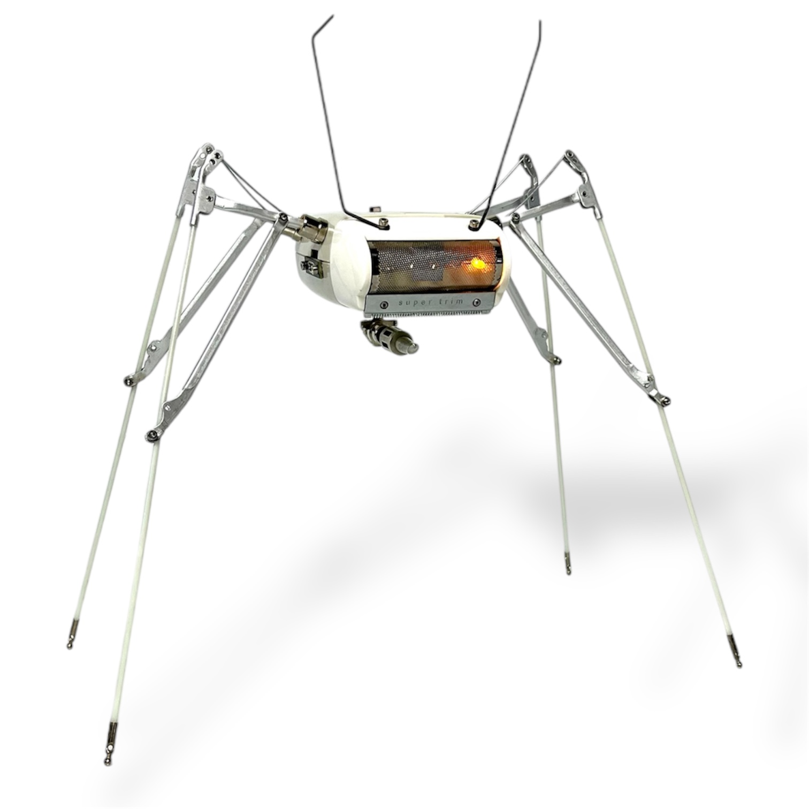
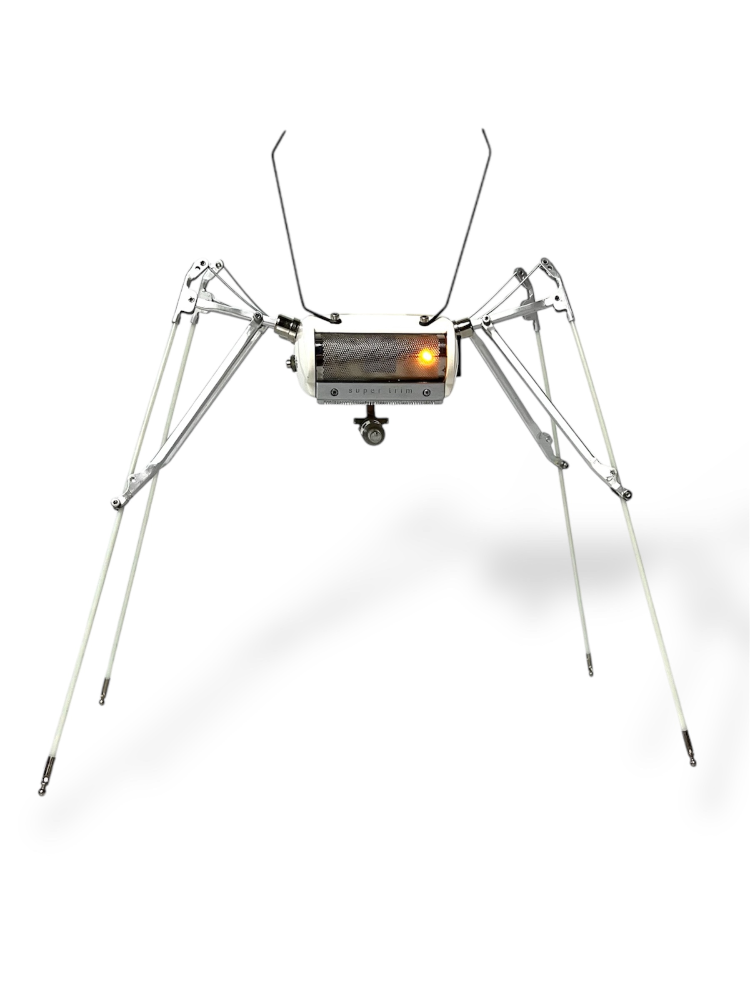
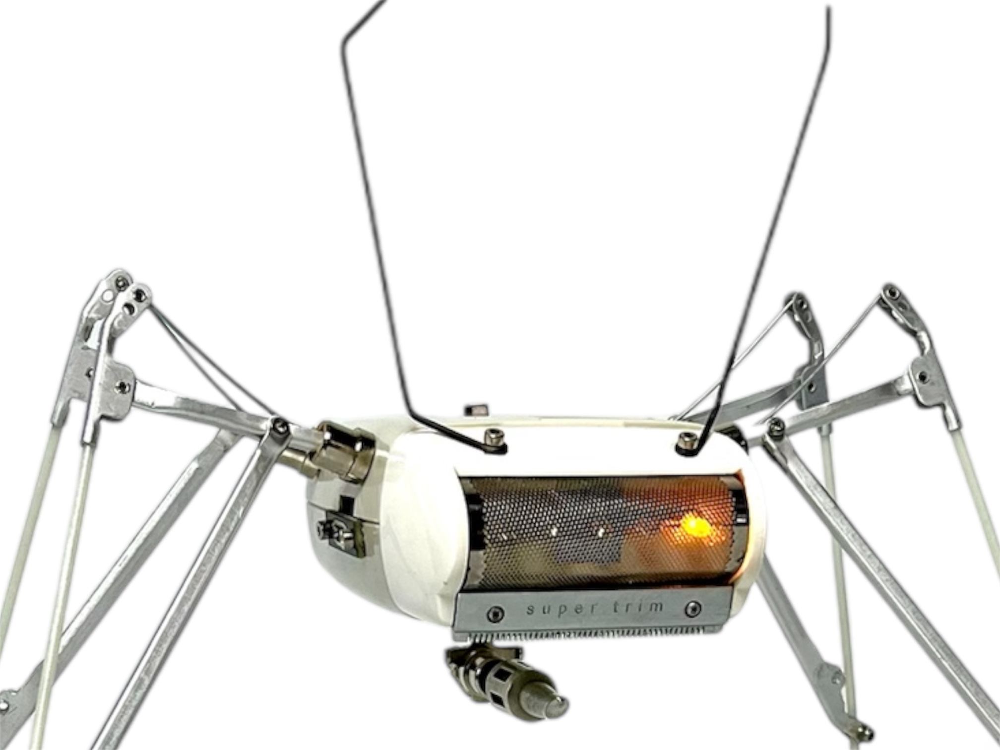
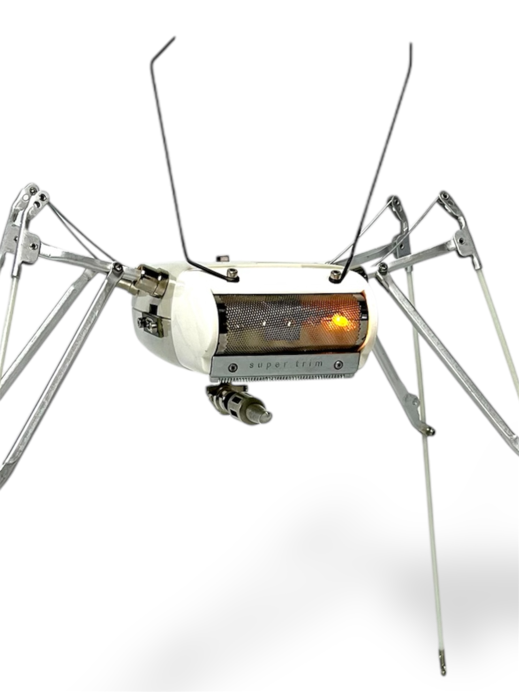
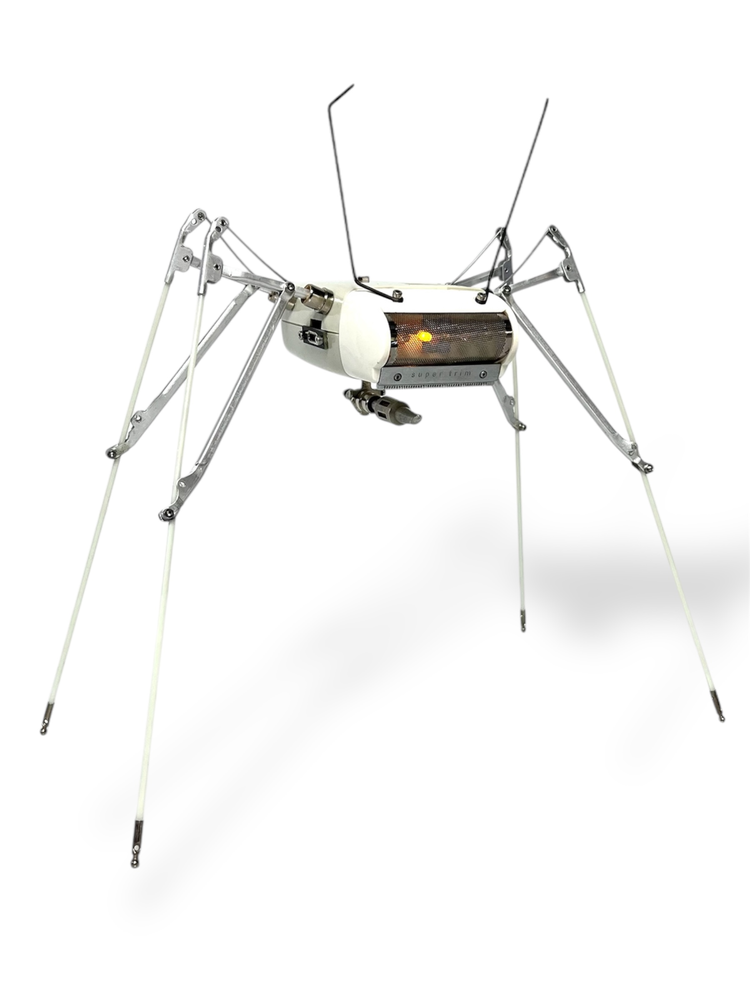
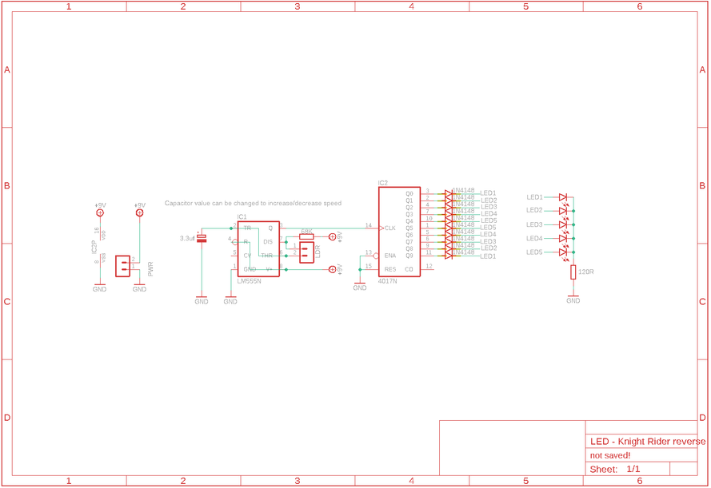
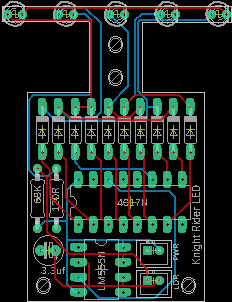

PARTS:Body: Old electric Shaver– mine is a Ronson. Go onto eBay or check out your local junk shops to find oneLegs: Umbrella. You want to use a small, portable type of umbrella as the rib and stretcher assembly are small and make for better legs. However, there is no reason why you couldn’t use a normal umbrella if you want longer legsLeg Mounts: 6 X Panel Mount RCA Female Plug Jack Connector – Ali ExpressI also put together a small phaser gun that sits underneath the junkbot. This is made from bits that I found – if you want something the same then you’ll need to raid your junk bin and make oneAntenna – still wire taken from a typewriter.PCB information inc parts list can be found on the next stepElectronicsPCB and Parts - see next stepVoltage boost converter module - Ali ExpressLi-po or old mobile phone battery (see this Ible on how to reuse mobile phone batteriesUSC C Charging module – Ali ExpressToggle Switch – Ali ExpressThin wiresTOOLS:DrillDremel



PARTS:PCB - you will need to get one printed from a company like JLCPCB (not affiliated) I have provided all of the files you will need to get yours printed which you can find in my GitHub page. If you are unsure how to go about getting a board printed, then you are in luck as I have made a 'Ible on how to get it done which you can find hereI have also included a PDF of the parts list which you can find attached to this step4017 IC – Ali Express555 IC – Ali Express3.3uf Capacitor – Ali ExpressLight dependent Resistor (LDR) – Ali Express68k Resistor – Ali Express120R Resistor – Ali Express10 X 1N4148 Diodes – Ali Express5 X LED’s – Ali ExpressVoltage boost converter module - Ali ExpressLi-po or old mobile phone battery (see this Ible on how to reuse mobile phone batteriesLED Chaser - Parts List.pdfDownload


The legs are made up of arms which consist of the rib, rib end (tip) and stretcher parts of the umbrella. I have included a drawing which shows these parts so you know what I’m talking about.STEPSFirst cut away the thread that is holding the canopy to the tip, rib and stretcher. You want to remove all of the canopy material so you are only left with the umbrella skeletonThe stretcher and ribs are connected to the runner section of the umbrella. There is usually some wire holding the parts to the runner which you can cut away. This will allow you to remove the rib & stretcher sections. These will form the basis of the legs


STEPS:A leg is made from the rib and one of the stretcher sections. You will notice that there is wire along the stretcher sections. It is used to keep the umbrella arms taut.Cut the wire and the stretcher arm away from the rest of the umbrella arm and then trim the stretcher to aprox 40 to 50mm long (see image 2)To secure the wire in the stretcher arm you need to bend the stretcher around the wire. I used a pair of plyers to do this. Once you have moved the rib to the position that you want the leg you can then trim the wire (image 3)You now have the beginnings for the first leg. – you will be able to adjust the legs later so don’t worry too much about the angle. However, you should at least place it against the body of the shaver and make sure you are happy with the angle as you will be using this leg later as a template for the rest


STEPS:Now it is time to add a stretcher part to the leg to give it some rigidity and a better look!First, remove one of the stretcher arms that is connected to the rest of the umbrella arm. I used a drill to drill out the rivet holding it in placeNow grab a Dremel or small hacksaw and make a slit to the back of each end. This will allow you to open up those sections so they fit onto the leg like you can see in image 6Once you have the stretcher in place and your happy with the placement, you will now have to drill a small hole into the stretcher arm that makes up the top part of the leg so you can secure the other stretcher into place.You can secure the stretcher into place by using some M2 screws and nuts. Don’t do the nut up too tight around the rib for the moment. You can make adjustments later if you need to to the angle of the legs and then tighten them up when he is standing as you want him to.Do this another 3 times!


STEPSThis is a pretty straight forward step – removing the insides from the shaver. I don’t have too many images as I removed the insides ages ago, but you’ll be able to work it out easilyRemove the head section of the shaver and put to one sideUn-screw the 4 screws holding the shaver togetherNow start to remove the parts from the inside. You won’t need to keep any wires or the actual motor of the shaver so they can be kept for other projects.There is a metal chassis inside which has a button attached to the side so you can remove the head section of the shaver. You’ll need to keep this in place, but you can remove any bits that are sticking up with a dermal. You’ll need as much room as possible if you are going to fit the electronics and battery inside


You need a way to hold the legs in place. For this I used some audio jack connectors (see parts list). These worked well as they have a screw and nut section which can be used to connect them to the shaver.STEPS:The first thing to do is to position the jack connector against the shaver to determine the best positions to drill the 4 holes for the legs. I added mine to the top section of the shaver as this ensured that the metal chassis that fits into the bottom would be in the way.Drill the holes and then attached the audio connectors. You an also now to try and fit the legs into the audio connector holes. You may need to squish then ends of the legs a little more with some plyers to ensure that they fit right.To be able to re-charge the battery, you’ll need to be able co connect it to a USC C connector. I decided to attach mine to the switch section on the shaver.Place the USB C module against the shaver and mark where you need to drill the holes.Use a M2 drill bit to drill a couple holes and secure the module to the side of the shaver using some screws and nuts. We’ll connect it later to the battery.Once done, it's time to stick the legs into place and see what he looks like!


Now it’s time to put the legs into the body and see how everything looks.STEPS:Pick up a leg and push it into the audio connector hole. You may need to squash the stretcher arm metal a little more in order for it to fit. You want it a good, tight fit, that way you won’t have to use any glue and will be able to move and position the legs whenever you likeDo the same for the next 3 legs and stand your Junkbot up. If he is little a little wobbly on his feet, then move the legs around until he is standing with all 4 feet on the ground. You can also make the stand of each leg shorter or longer.Once you have him positioned in the way that you like, tighten up the screws that are holding the stretcher arm around the rib which will lock the legs into place


This bit is entirely up to you. You might be happy to keep your junkbot only having the minimal parts attached or you might want to customize yours. Here’s what I did.STEPS:I added some antenna to the head section of the shaver. These were wires that I pulled out of an old typewriter. I secured them into place with some M2 screws and nuts.I made a phaser rifle thingy that I attached to the bottom of the shaver. It makes him a little more menacing, but I like the idea that these Junkbots have seen some sh*t!That’s really it. I left the original hardware in the back of the shaver which I also liked and also kept the brand name sticker on the top.


The PCB is pretty straight forward to solder. You'll need to make sure that the LED's are orientated right (pos and negative) and also ensure that the cap is lying down to save room.STEPS: As always, start with the lowest profile components - in this case it's the resistors.you can now move onto the diodes and solder these into placeNext move onto the IC's. I decided not to add IC sockets as I wanted to keep the profile as low as possible. There's always a small risk that the IC is faulty but if it is you can always de-solder it.Now you can solder the JST connector in place if you are using one. It isn't necessary as you can just solder wires directly to the PCBThe capacitor can now be soldered into place. As mentioned above, you should lie the cap down to help save room.For the LDR, as this will be placed so it can detect light, just add some thin wire to the solder points on the PCB. You can connect the LDR up laterThe last thing is to solder into place the LED's. Place the first LED into place and bend 90 degrees. Make sure that it is orientated right and solder into place. Do the same for the rest of the LED'sBest to also test your PCB as well once finished to make sure everything is working.


Now that you have your PCB done, it's time to wire up the power section..STEPS:The first thing to do is to mock up where everything is going to go to ensure it all fits inside the Junkbot. Add the battery to the bottom section of the shaver. Place the PCB on top and see if you can close the shaver up. You can? good. If not, then you might have to make some more room inside the shaver by trimming away superfluous bits inside.Now that you know everything fits, it's time to wire up everything. I have provided a wiring diagram which will show you how to connect the parts up. Try and use thin wire - I like to use computer ribbon cable, as wire can take up a lot of roomFirst - work out the best position for the the charging module to be attached to the battery and superglue it into place.I used a couple resistor legs to connect the charging module solder points to the battery terminalsNow do the same thing for the power converter module. The power converter will increase the voltage from 3.7V to 9V. You need to remove the little 0 ohm resistor in 'section A' on the module. You can use a exacto knife to cut it off - they come of easily and are meant to be removed.Note - the power converter module also has a small blue LED which is a power indicator. There is another SMD resistor right next to the LED (indicated by an oval), which you should also remove with an exacto knife.Now superglue it also to the top of the battery and connect it to the positive and negative of the charging moduleAdd a couple thin wires to the 'input' section of the charging module and connect these to the USB C module. This will allow you to power up the battery externally.Plus in a USB C charging cord and charge up the battery.


Right! now it's time to connect everything together and close up your Junkbot!STEPS:Use the wiring diagram I made in step 10 to help you work out how to wire everything up.Connect the positive from the output of the power booster module to the switch and then connect the other leg of the switch to positive on the PCBconnect ground from the power booster module to ground on the PCBDrill a couple small holes in the top of the shaver for the legs of the LDR to go through. solder the legs to the LDR wire on the PCBYou'll need to work out the best way to add the PCB into the Junkbot so the shaver closes up. In my initial attempt, I found that the PCB sat too high so had to add a small wedge of wood under the PCB and secure it inside the shaver at an angle. As long as the LED's are in the middle of the shaver head, then it doesn't really matter too much how the PCB is angled. I used some glue to secure this into placeNow you can carefully place the top back onto the shaver and secure to the bottom section with screws.Add the shaver head back into placeI think that's everything! how turn on your Junkbot and watch him scan the room for potential enemies to neutralize! As it gets darker, the LED's will slow down but if it gets brighter, they'll speed up. Pretty cool!